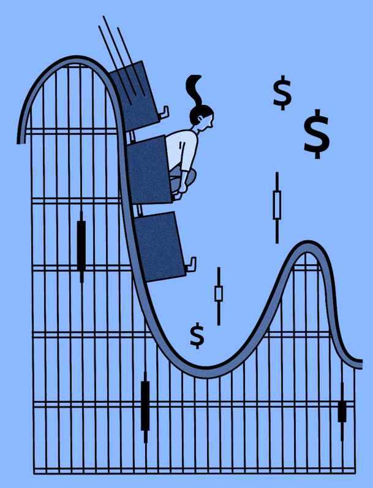

Financial Time Series Models (ARCH/GARCH)
Background
(Generalized) Autoregressive Conditional Heteroskedasticity (ARCH) and (GARCH) are statistical models used in econometrics, particularly in financial time series analysis. These models are designed to capture the dynamic nature of volatility, a key concept in financial markets that signifies the degree of variation of returns for a given security or market index. Volatility is a significant aspect of financial time series data, reflecting the degree of risk or uncertainty in a market. High volatility indicates a higher degree of risk, as the asset’s price can change dramatically in a short time. Thus, accurately modeling and forecasting volatility with ARCH and GARCH models can lead to more informed investment strategies and improved risk assessment.

ARCH models, introduced by Robert Engle in 1982, describe the variance of the current error term or innovation as a function of the actual sizes of the previous time periods’ error terms. In other words, ARCH models capture the phenomenon of “volatility clustering,” where periods of high volatility tend to be followed by high volatility, and low by low.
GARCH models, a generalized version of ARCH models, incorporate lagged values of the error variance itself into the model. GARCH models are particularly beneficial when dealing with time series data that exhibits volatility clustering and leverage effects. They can effectively model and forecast time-varying volatility, which is a crucial aspect of financial decision making, risk management, and options pricing.
Exxon Model Fitting with ARIMA and GARCH
Since my project has exactly nothing to do with financial time series data (which was not a requirement when choosing projects) I will instead focus on a completely random topic because that’s what the professor told me to do. As mentioned many times, one of the main greenhouse emitters are energy companies, specifically oil companies. They are terrible and I need not say more. So, let’s get the stock data for our favorite company, Exxon! After getting the data, we plot to see what we are working with. Based on the data, it would be wise to take the logarithm since the values are highly skewed from when the stock was doing well and when it was doing poorly.
Exxon Stock Price


Stationarity
As with most ARCH/GARCH models, we will be modelling the returns rather than the raw data. This is partly why we took the logarithm, so that the returns are on a more reasonable scale from different time periods of the stock. Plotting the raw data, we can see that this series is clearly not stationary. There is extremely high correlation between values as well as string seasonality present in the data. Thus, to address the non-stationarity, we will need to do differencing. In addition to differencing, we will also need to calculate the logarithm of the data to account for large variations in price that occurred over the time frame of interest. Based on the ACF plot, we can see that after taking the log and differenc of the data, this series is now weakly stationary. There is no need for additional differencing as the ACF and PACF plots are looking good already. Any extra differencing would result in over-differencing and would make modeling more difficult.


GARCH(p,q) model fitting with ARIMA
ArchTest
First, we check for ARCH effects with the ArchTest() function. We will use a standard significance level of \(\alpha=0.05\) for our null hypothesis test. Because the p-value is much smaller than 0.05, so we reject the null hypothesis and conclude the presence of ARCH(1) effects.
ARCH LM-test; Null hypothesis: no ARCH effects
data: returns
Chi-squared = 87.884, df = 1, p-value < 2.2e-16ARIMA model
Let’s fit the ARIMA model first. We follow the same procedure as previously. For more on ARIMA models, check out the other tabs of the website.
p d q AIC BIC AICc
1 0 1 0 -11199.74 -11194.06 -11199.73
2 0 1 1 -11198.76 -11187.40 -11198.76
3 0 1 2 -11197.28 -11180.25 -11197.27
4 0 1 3 -11200.80 -11178.08 -11200.78
5 0 1 4 -11199.37 -11170.97 -11199.34
6 1 1 0 -11198.79 -11187.44 -11198.79
7 1 1 1 -11197.95 -11180.91 -11197.94
8 1 1 2 -11196.68 -11173.97 -11196.67
9 1 1 3 -11198.96 -11170.56 -11198.93
10 1 1 4 -11199.73 -11165.65 -11199.69
11 2 1 0 -11197.43 -11180.40 -11197.42
12 2 1 1 -11196.56 -11173.84 -11196.54
13 2 1 2 -11194.02 -11165.63 -11193.99
14 2 1 3 -11199.16 -11165.09 -11199.12
15 2 1 4 -11215.98 -11176.22 -11215.93
16 3 1 0 -11200.19 -11177.47 -11200.17
17 3 1 1 -11198.19 -11169.79 -11198.16
18 3 1 2 -11198.57 -11164.50 -11198.53
19 3 1 3 -11214.06 -11174.30 -11214.00
20 3 1 4 -11214.34 -11168.91 -11214.28
21 4 1 0 -11198.21 -11169.82 -11198.18
22 4 1 1 -11196.22 -11162.15 -11196.18
23 4 1 2 -11216.12 -11176.37 -11216.07
24 4 1 3 -11214.08 -11168.65 -11214.02ARIMA(0,1,0)
Series: log(xom)
ARIMA(0,1,0)
sigma^2 = 0.0003299: log likelihood = 5600.87
AIC=-11199.74 AICc=-11199.73 BIC=-11194.06Using the auto.arima function, we can see the the best model is the ARIMA(0,1,0). But the ACF and PACF does not suggest these are good values. Since the auto arima function is sometimes un-trsutworthy, I am still going to go with the (0,1,0) ARIMA as determined by the manual arima model selection.
Using the standardized residuals plots, we can see that the ARIMA model is insufficient to accurately model the financial time series data. Thus, we will need to use the GARCH model on top of the residuals from the ARIMA model. This is a common tactic in financial time series which has a much different pattern than other time series like the greenhouse gases for the remainder of the project. Thus, we will continue modeling with the GARCH model. I choice the GARCH values based on the ACF graph, of the ARIMA mode. As we can see from this chart, we should try all p,q values between 0 and 4.
GARCH model
Next, we will fit the ARIMA model and then fit a GARCH model to the residuals of the ARIMA model.


[1] 8
Call:
garch(x = arima.res, order = c(q, p), trace = F)
Coefficient(s):
a0 a1 a2 b1 b2 b3 b4
2.947e-06 1.293e-01 4.522e-02 1.809e-01 5.182e-01 1.979e-09 1.272e-01 After trying all p,q values from 0,4 in combination, the GARCH(1,2) model is the best and has the lowest combination of AIC and BIC models. I tested all of the models, but only included the output from the best one. I attempted to use cross validation but was unsuccessful in making comparisons between the different models.
Title:
GARCH Modelling
Call:
garchFit(formula = ~garch(1, 2), data = arima.res, trace = F)
Mean and Variance Equation:
data ~ garch(1, 2)
<environment: 0x000001b24e4a8b28>
[data = arima.res]
Conditional Distribution:
norm
Coefficient(s):
mu omega alpha1 beta1 beta2
1.9165e-05 2.3769e-06 1.3352e-01 3.1753e-01 5.4845e-01
Std. Errors:
based on Hessian
Error Analysis:
Estimate Std. Error t value Pr(>|t|)
mu 1.917e-05 2.574e-04 0.074 0.94064
omega 2.377e-06 8.702e-07 2.731 0.00631 **
alpha1 1.335e-01 1.718e-02 7.773 7.77e-15 ***
beta1 3.175e-01 1.299e-01 2.445 0.01447 *
beta2 5.484e-01 1.241e-01 4.420 9.86e-06 ***
---
Signif. codes: 0 '***' 0.001 '**' 0.01 '*' 0.05 '.' 0.1 ' ' 1
Log Likelihood:
6038.332 normalized: 2.790357
Description:
Sat May 6 22:30:03 2023 by user: sleblanc
Standardised Residuals Tests:
Statistic p-Value
Jarque-Bera Test R Chi^2 204.3501 0
Shapiro-Wilk Test R W 0.9875821 9.310447e-13
Ljung-Box Test R Q(10) 3.419253 0.9697692
Ljung-Box Test R Q(15) 5.198538 0.9903078
Ljung-Box Test R Q(20) 13.75291 0.8427997
Ljung-Box Test R^2 Q(10) 13.44694 0.1997446
Ljung-Box Test R^2 Q(15) 18.69139 0.2280607
Ljung-Box Test R^2 Q(20) 19.54016 0.487005
LM Arch Test R TR^2 16.69211 0.1615506
Information Criterion Statistics:
AIC BIC SIC HQIC
-5.576092 -5.562969 -5.576103 -5.571293 Since all the models has similar AIC ,BIC values, I would go with GARCH(1,1) which all the coefficients are significant.
Final Model
The final model has a decent but not great fit for the Exxon stock return data. All of the errors except for mu are significant but the Ljung-Box statistics are well over the standard threshold. Since there is a mix of indicators, this tells us that the model is decent but not quantifiable better than the simpler ARIMA model. Thus, in this case I would rely on the ARIMA since it is a simpler specification.
Series: data
ARIMA(0,1,0) with drift
Coefficients:
drift
3e-04
s.e. 4e-04
sigma^2 = 0.00033: log likelihood = 5601.07
AIC=-11198.15 AICc=-11198.14 BIC=-11186.79
Training set error measures:
ME RMSE MAE MPE MAPE
Training set 1.916534e-06 0.01815789 0.01249646 -0.001488456 0.3103592
MASE ACF1
Training set 0.04607173 -0.02228188
Title:
GARCH Modelling
Call:
garchFit(formula = ~garch(1, 2), data = arima.res, trace = F)
Mean and Variance Equation:
data ~ garch(1, 2)
<environment: 0x000001b250f9deb0>
[data = arima.res]
Conditional Distribution:
norm
Coefficient(s):
mu omega alpha1 beta1 beta2
1.9165e-05 2.3769e-06 1.3352e-01 3.1753e-01 5.4845e-01
Std. Errors:
based on Hessian
Error Analysis:
Estimate Std. Error t value Pr(>|t|)
mu 1.917e-05 2.574e-04 0.074 0.94064
omega 2.377e-06 8.702e-07 2.731 0.00631 **
alpha1 1.335e-01 1.718e-02 7.773 7.77e-15 ***
beta1 3.175e-01 1.299e-01 2.445 0.01447 *
beta2 5.484e-01 1.241e-01 4.420 9.86e-06 ***
---
Signif. codes: 0 '***' 0.001 '**' 0.01 '*' 0.05 '.' 0.1 ' ' 1
Log Likelihood:
6038.332 normalized: 2.790357
Description:
Sat May 6 22:30:03 2023 by user: sleblanc
Standardised Residuals Tests:
Statistic p-Value
Jarque-Bera Test R Chi^2 204.3501 0
Shapiro-Wilk Test R W 0.9875821 9.310447e-13
Ljung-Box Test R Q(10) 3.419253 0.9697692
Ljung-Box Test R Q(15) 5.198538 0.9903078
Ljung-Box Test R Q(20) 13.75291 0.8427997
Ljung-Box Test R^2 Q(10) 13.44694 0.1997446
Ljung-Box Test R^2 Q(15) 18.69139 0.2280607
Ljung-Box Test R^2 Q(20) 19.54016 0.487005
LM Arch Test R TR^2 16.69211 0.1615506
Information Criterion Statistics:
AIC BIC SIC HQIC
-5.576092 -5.562969 -5.576103 -5.571293 [1] ""
[2] "Title:"
[3] " GARCH Modelling "
[4] ""
[5] "Call:"
[6] " garchFit(formula = ~garch(1, 2), data = arima.res, trace = F) "
[7] ""
[8] "Mean and Variance Equation:"
[9] " data ~ garch(1, 2)"
[10] "<environment: 0x000001b250f9deb0>"
[11] " [data = arima.res]"
[12] ""
[13] "Conditional Distribution:"
[14] " norm "
[15] ""
[16] "Coefficient(s):"
[17] " mu omega alpha1 beta1 beta2 "
[18] "1.9165e-05 2.3769e-06 1.3352e-01 3.1753e-01 5.4845e-01 "
[19] ""
[20] "Std. Errors:"
[21] " based on Hessian "
[22] ""
[23] "Error Analysis:"
[24] " Estimate Std. Error t value Pr(>|t|) "
[25] "mu 1.917e-05 2.574e-04 0.074 0.94064 "
[26] "omega 2.377e-06 8.702e-07 2.731 0.00631 ** "
[27] "alpha1 1.335e-01 1.718e-02 7.773 7.77e-15 ***"
[28] "beta1 3.175e-01 1.299e-01 2.445 0.01447 * "
[29] "beta2 5.484e-01 1.241e-01 4.420 9.86e-06 ***"
[30] "---"
[31] "Signif. codes: 0 '***' 0.001 '**' 0.01 '*' 0.05 '.' 0.1 ' ' 1"
[32] ""
[33] "Log Likelihood:"
[34] " 6038.332 normalized: 2.790357 "
[35] ""
[36] "Description:"
[37] " Sat May 6 22:30:03 2023 by user: sleblanc "
[38] "" Let \(x_t\) be the time series data and \(z_t\) be the residuals of the ARIMA model. Then the GARCH(1, 2) model is defined by:
\[z_t = \sigma_t * \epsilon_t\]
where \(\epsilon_t\) follows a standard normal distribution (mean = 0, sd = 1), and the conditional variance \(\sigma_t^2\) is given by:
\[\sigma_t^2 = \omega + \alpha_1 * z_(t-1)^2 + \beta_1 * \sigma_(t-1)^2 + \beta_2 * \sigma_(t-2)^2\]
with the estimated coefficients being:
\(\omega\) = 0.00001667 \(\alpha_1\) = 0.08827887 \(\beta_1\) = 0.37861131 \(\beta_2\) = 0.53446470 The model is fitted to the residuals of an ARIMA model (arima.res).
Forecast

meanForecast meanError standardDeviation lowerInterval upperInterval
1 1.916534e-05 0.02085311 0.02085311 -0.04085219 0.04089052
2 1.916534e-05 0.02082003 0.02082003 -0.04078735 0.04082568
3 1.916534e-05 0.02088995 0.02088995 -0.04092438 0.04096271
4 1.916534e-05 0.02090333 0.02090333 -0.04095060 0.04098893
5 1.916534e-05 0.02094757 0.02094757 -0.04103732 0.04107565
6 1.916534e-05 0.02097481 0.02097481 -0.04109070 0.04112903
7 1.916534e-05 0.02101126 0.02101126 -0.04116215 0.04120048
8 1.916534e-05 0.02104257 0.02104257 -0.04122351 0.04126184
9 1.916534e-05 0.02107660 0.02107660 -0.04129021 0.04132854
10 1.916534e-05 0.02110904 0.02110904 -0.04135379 0.04139212
11 1.916534e-05 0.02114225 0.02114225 -0.04141889 0.04145722
12 1.916534e-05 0.02117495 0.02117495 -0.04148297 0.04152130
13 1.916534e-05 0.02120783 0.02120783 -0.04154742 0.04158576
14 1.916534e-05 0.02124052 0.02124052 -0.04161149 0.04164982
15 1.916534e-05 0.02127322 0.02127322 -0.04167558 0.04171391
16 1.916534e-05 0.02130582 0.02130582 -0.04173947 0.04177780
17 1.916534e-05 0.02133838 0.02133838 -0.04180329 0.04184162
18 1.916534e-05 0.02137087 0.02137087 -0.04186697 0.04190530
19 1.916534e-05 0.02140330 0.02140330 -0.04193054 0.04196887
20 1.916534e-05 0.02143568 0.02143568 -0.04199399 0.04203232
21 1.916534e-05 0.02146799 0.02146799 -0.04205732 0.04209566
22 1.916534e-05 0.02150025 0.02150025 -0.04212054 0.04215887
23 1.916534e-05 0.02153244 0.02153244 -0.04218365 0.04222198
24 1.916534e-05 0.02156458 0.02156458 -0.04224664 0.04228497
25 1.916534e-05 0.02159666 0.02159666 -0.04230951 0.04234784
26 1.916534e-05 0.02162868 0.02162868 -0.04237227 0.04241061
27 1.916534e-05 0.02166065 0.02166065 -0.04243492 0.04247325
28 1.916534e-05 0.02169255 0.02169255 -0.04249746 0.04253579
29 1.916534e-05 0.02172440 0.02172440 -0.04255988 0.04259822
30 1.916534e-05 0.02175620 0.02175620 -0.04262220 0.04266053
31 1.916534e-05 0.02178793 0.02178793 -0.04268440 0.04272273
32 1.916534e-05 0.02181961 0.02181961 -0.04274649 0.04278482
33 1.916534e-05 0.02185124 0.02185124 -0.04280847 0.04284680
34 1.916534e-05 0.02188281 0.02188281 -0.04287034 0.04290868
35 1.916534e-05 0.02191432 0.02191432 -0.04293211 0.04297044
36 1.916534e-05 0.02194577 0.02194577 -0.04299376 0.04303209
37 1.916534e-05 0.02197718 0.02197718 -0.04305531 0.04309364
38 1.916534e-05 0.02200852 0.02200852 -0.04311675 0.04315508
39 1.916534e-05 0.02203981 0.02203981 -0.04317808 0.04321641
40 1.916534e-05 0.02207105 0.02207105 -0.04323930 0.04327763
41 1.916534e-05 0.02210224 0.02210224 -0.04330042 0.04333875
42 1.916534e-05 0.02213336 0.02213336 -0.04336143 0.04339976
43 1.916534e-05 0.02216444 0.02216444 -0.04342234 0.04346067
44 1.916534e-05 0.02219546 0.02219546 -0.04348314 0.04352147
45 1.916534e-05 0.02222643 0.02222643 -0.04354384 0.04358217
46 1.916534e-05 0.02225735 0.02225735 -0.04360443 0.04364276
47 1.916534e-05 0.02228821 0.02228821 -0.04366492 0.04370325
48 1.916534e-05 0.02231902 0.02231902 -0.04372531 0.04376364
49 1.916534e-05 0.02234978 0.02234978 -0.04378560 0.04382393
50 1.916534e-05 0.02238048 0.02238048 -0.04384578 0.04388411
51 1.916534e-05 0.02241114 0.02241114 -0.04390586 0.04394419
52 1.916534e-05 0.02244174 0.02244174 -0.04396584 0.04400417
53 1.916534e-05 0.02247229 0.02247229 -0.04402571 0.04406404
54 1.916534e-05 0.02250279 0.02250279 -0.04408549 0.04412382
55 1.916534e-05 0.02253324 0.02253324 -0.04414517 0.04418350
56 1.916534e-05 0.02256363 0.02256363 -0.04420474 0.04424308
57 1.916534e-05 0.02259398 0.02259398 -0.04426422 0.04430255
58 1.916534e-05 0.02262428 0.02262428 -0.04432360 0.04436193
59 1.916534e-05 0.02265452 0.02265452 -0.04438288 0.04442121
60 1.916534e-05 0.02268472 0.02268472 -0.04444206 0.04448039
61 1.916534e-05 0.02271486 0.02271486 -0.04450115 0.04453948
62 1.916534e-05 0.02274496 0.02274496 -0.04456014 0.04459847
63 1.916534e-05 0.02277501 0.02277501 -0.04461903 0.04465736
64 1.916534e-05 0.02280500 0.02280500 -0.04467782 0.04471615
65 1.916534e-05 0.02283495 0.02283495 -0.04473652 0.04477485
66 1.916534e-05 0.02286485 0.02286485 -0.04479512 0.04483345
67 1.916534e-05 0.02289470 0.02289470 -0.04485362 0.04489196
68 1.916534e-05 0.02292450 0.02292450 -0.04491204 0.04495037
69 1.916534e-05 0.02295426 0.02295426 -0.04497035 0.04500868
70 1.916534e-05 0.02298396 0.02298396 -0.04502857 0.04506690
71 1.916534e-05 0.02301362 0.02301362 -0.04508670 0.04512503
72 1.916534e-05 0.02304323 0.02304323 -0.04514474 0.04518307
73 1.916534e-05 0.02307279 0.02307279 -0.04520268 0.04524101
74 1.916534e-05 0.02310231 0.02310231 -0.04526053 0.04529886
75 1.916534e-05 0.02313178 0.02313178 -0.04531828 0.04535661
76 1.916534e-05 0.02316120 0.02316120 -0.04537595 0.04541428
77 1.916534e-05 0.02319057 0.02319057 -0.04543352 0.04547185
78 1.916534e-05 0.02321990 0.02321990 -0.04549100 0.04552933
79 1.916534e-05 0.02324918 0.02324918 -0.04554839 0.04558672
80 1.916534e-05 0.02327841 0.02327841 -0.04560569 0.04564402
81 1.916534e-05 0.02330760 0.02330760 -0.04566290 0.04570123
82 1.916534e-05 0.02333675 0.02333675 -0.04572002 0.04575835
83 1.916534e-05 0.02336584 0.02336584 -0.04577705 0.04581538
84 1.916534e-05 0.02339490 0.02339490 -0.04583399 0.04587232
85 1.916534e-05 0.02342390 0.02342390 -0.04589084 0.04592917
86 1.916534e-05 0.02345286 0.02345286 -0.04594760 0.04598593
87 1.916534e-05 0.02348178 0.02348178 -0.04600427 0.04604260
88 1.916534e-05 0.02351065 0.02351065 -0.04606086 0.04609919
89 1.916534e-05 0.02353947 0.02353947 -0.04611736 0.04615569
90 1.916534e-05 0.02356826 0.02356826 -0.04617377 0.04621210
91 1.916534e-05 0.02359699 0.02359699 -0.04623009 0.04626842
92 1.916534e-05 0.02362569 0.02362569 -0.04628633 0.04632466
93 1.916534e-05 0.02365434 0.02365434 -0.04634248 0.04638081
94 1.916534e-05 0.02368294 0.02368294 -0.04639855 0.04643688
95 1.916534e-05 0.02371150 0.02371150 -0.04645453 0.04649286
96 1.916534e-05 0.02374002 0.02374002 -0.04651042 0.04654875
97 1.916534e-05 0.02376849 0.02376849 -0.04656623 0.04660456
98 1.916534e-05 0.02379693 0.02379693 -0.04662195 0.04666028
99 1.916534e-05 0.02382531 0.02382531 -0.04667759 0.04671592
100 1.916534e-05 0.02385366 0.02385366 -0.04673315 0.04677148